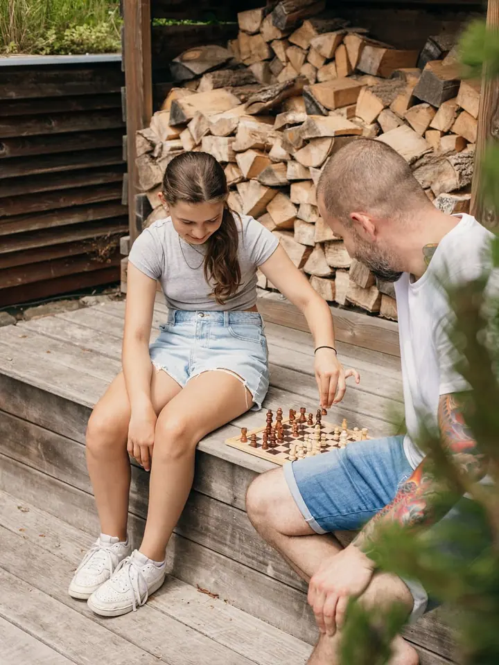
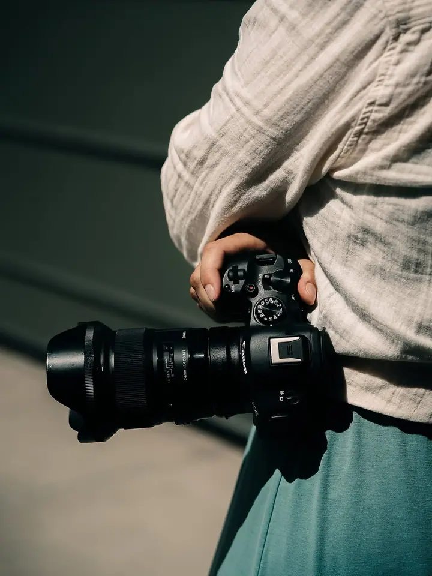
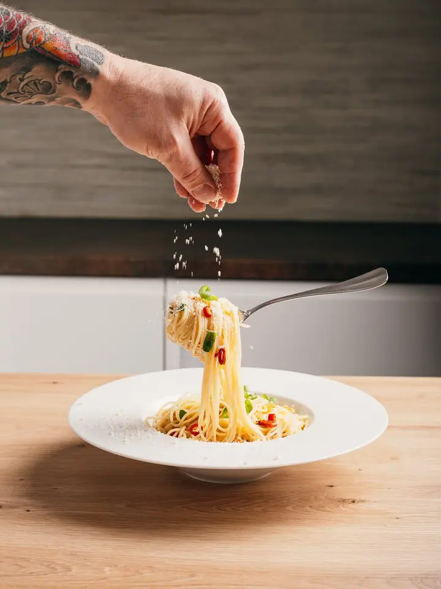
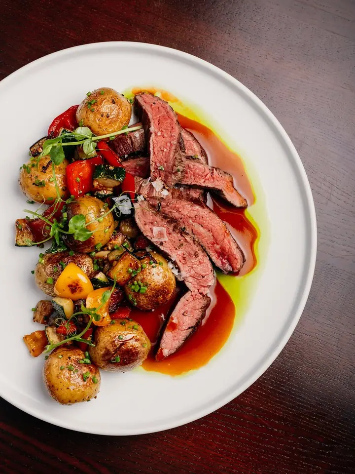
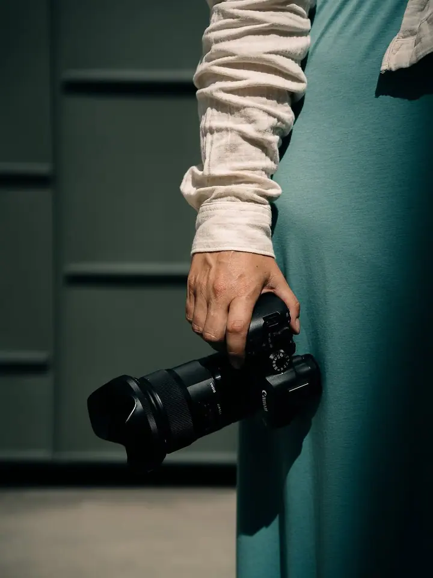
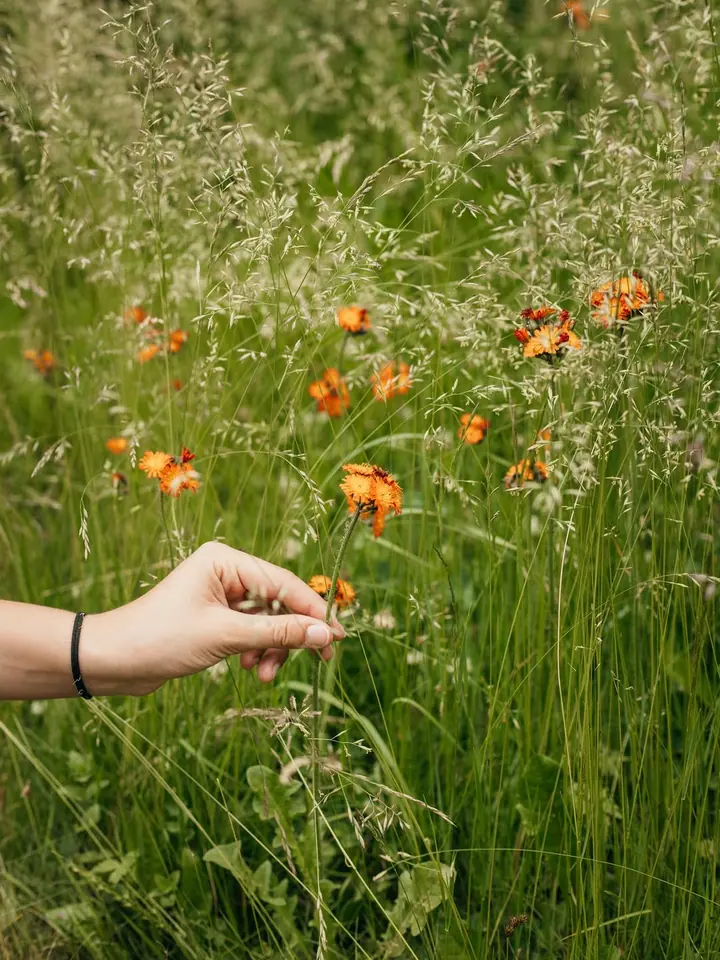
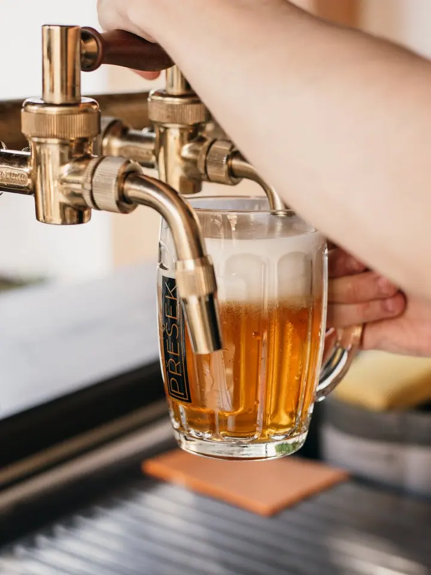
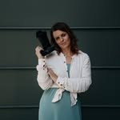

01 / 04
Fotografie ubytování
Fotím penziony, glampingy, tiny housy i hotely tak, aby bylo vidět nejen samotné ubytování, ale i atmosféru, kvůli které si hosté místo zamilují.
Zeptat se na termín→






Fotky, ve kterých je cítit atmosféra místa
Zeptat se na termín →(01) Ahoj
Jmenuji se Michala Petrášek a fotím ubytování , kavárny a restaurace i podnikatele a firmy . Pomáhám vám ukázat, co vás dělá jedinečnými, aby vaše prostory a služby mluvily samy za sebe. Působím hlavně v Plzeňském kraji, ale ráda přijedu kamkoliv.
451lidí sleduje mou práci na Instagramu
135příspěvků s fotkami a příběhy
(02) Co fotím
01 / 04
Fotím penziony, glampingy, tiny housy i hotely tak, aby bylo vidět nejen samotné ubytování, ale i atmosféru, kvůli které si hosté místo zamilují.
Zeptat se na termín→02 / 04
Jídlo, nápoje, interiér i lidé za barem. Fotky, které ukážou charakter vašeho podniku a navnadí nové hosty.
Zeptat se na termín→(04) Postup
Od první zprávy po hotovou galerii.
Krok 1 z 4
Společně probereme, co potřebujete zachytit: prostory, jídlo, portréty, pracovní momenty nebo dění uvnitř firmy.
Krok 2 z 4
Fotím přímo u vás, v Plzeňském kraji i kdekoliv jinde. Přizpůsobím se vašemu rytmu, aby focení respektovalo váš čas.
Krok 3 z 4
Pracuji se světlem, pohybem a detaily. Díky tomu je přirozenost a atmosféra místa znát i z fotografií.
Krok 4 z 4
Dostanete upravené fotografie připravené pro web, sociální sítě, rezervační portály i marketingové materiály.
Některé příběhy vypráví člověk, jiné prostor.
(05) Za objektivem
Pomáhám majitelům ubytování, podnikatelům a značkám ukázat, co je dělá jedinečnými. Fotím autenticky, tak aby z fotek bylo cítit světlo, atmosféra a charakter místa.
Každé focení stavím na citlivém vnímání prostoru, detailu a emocí. Nefotím jen pokoje nebo talíře, zajímá mě, proč se k vám lidé vracejí. Třeba na Glamping OOTOOLNO jsem se vrátila podruhé, abych zachytila jeho letní podobu v jabloňovém sadu.
Jsem máma, milovnice kávy a roadtripů po stylových ubytováních. Fotím na Canon a moje barvy jsou tmavě zelená a béžová. Ráda pro vás vytvořím fotografie, které podpoří vaši značku a byznys.

Michala
Michala Petrášek · Fotografka ubytování, gastra a firem
Působím hlavně v Plzeňském kraji, v Plzni, Domažlicích a v Praze, ale ráda přijedu kamkoliv.
Na web, sociální sítě, rezervační portály, LinkedIn, do PR článků, kampaní i firemních prezentací.
Vůbec ne. Přizpůsobím se vám a vašemu rytmu, fotím přirozeně a bez nucených póz.
Ano. Ráda zachytím jídlo, nápoje, detaily interiéru i lidi, kteří za vaším podnikem stojí.
(07) Kontakt
Napište pár vět o tom, co si představujete, a termín, který se vám hodí.
fotografka@michalapetrasek.cz